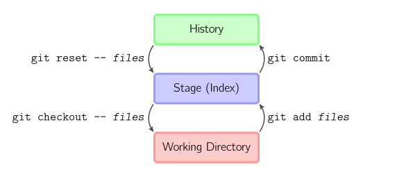

项目开发利器 Git¶
Git 是一个免费的开源分布式版本控制系统，旨在快速高效地处理从小型到大型项目的所有内容。
学习资料：
Pro Git 由 Scott Chacon和Ben Straub 撰写并由 Apress 出版的完整 Git 书籍。该书的印刷版可在 Amazon.com 上获得。
-
Embrace InnerSource：Harness the collective intelligence of your organization.
可参考 计算机视觉入门必备工具 配置 Git。
1 起步¶

已修改 表示修改了文件，但还没保存到数据库中。
已暂存 表示对一个已修改文件的当前版本做了标记，使之包含在下次提交的快照中。（存储在
.git/index中，一般被称为 暂存区）已提交 表示数据已经安全地保存在本地数据库中。
安装完 Git，初次使用它之前，需要做一些前置工作：
设置用户名和邮箱（这一点很重要，因为每一个 Git 提交都会使用这些信息，它们会写入到你的每一次提交中，不可更改）：
$ git config --global user.name "John Doe"
$ git config --global user.email johndoe@example.com
设定文本编辑器用于编写代码（推荐使用 VS Code）：
$ git config --global core.editor "code --wait"
2 Git Flow 工作流¶
参考 A Successful Git Branching Model
为了提高项目开发的管理效率，使用 Git Flow 工作流是很不错的想法。它把整个开发周期分为如下分支：
- Production 分支
- 主分支，项目的功能实现后，最终在 mian 分支上对外发布
- 该分支为只读分支，只能从其他分支（release/hotfix）合并，不要在此分支直接修改
- 所有在 main 分支上的 Commit 都应该 Tag 以作记录，方便追溯
- Develop 分支
- 基于 main 分支的主开发分支，包含所有要发布到下一个 Release 的分支，主要合并于其他分支，比如 Feature 分支
- 该分支为只读分支，只能从其他分支合并
- feature 功能分支完成，合并到 develop(不推送)
- release/hotfix 分支上线完毕，合并到 develop 并推送
- Feature 分支
- 基于 develop 分支的功能开发分支, 主要用于新需求新功能的开发
- 功能开发完毕后合到 develop 分支(未正式上线之前不推送到远程中央仓库!!!)
- feature 分支可同时存在多个，用于团队中多个功能同时开发，属于临时分支，功能完成后可选删除
- Release 分支
- 当需要一个发布一个新 Release 的时候，则基于 Develop 分支创建一个 Release 分支，完成 Release 后，再合并到 main 和 Develop 分支，同时在 main 分支上打个 Tag 记住 Release 版本号，然后可以删除 Release 分支了。
- 一旦创建 Release 分支之后不要从 Develop 分支上合并新的改动到 Release 分支
- Hotfix 分支
- 当我们在 Production 发现新的 Bug 时候，我们需要创建一个 Hotfix, 完成 Hotfix 后，我们合并回 main 和 Develop 分支，所以 Hotfix 的改动会进入下一个 Release，同时在 main 上打一个 tag
初始化:
git flow init开始新 Feature:
git flow feature start MYFEATUREPublish一个Feature(也就是
push到远程):git flow feature publish MYFEATURE获取 Publish 的Feature:
git flow feature pull origin MYFEATURE完成一个 Feature:
git flow feature finish MYFEATURE开始一个 Release:
git flow release start RELEASE [BASE]Publish一个Release:
git flow release publish RELEASE发布 Release:
git flow release finish RELEASE，别忘了git push --tags开始一个 Hotfix:
git flow hotfix start VERSION [BASENAME]发布一个 Hotfix:
git flow hotfix finish VERSION